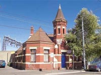

The dramatic Gershwin Room at the Esplanade Hotel hosts the big names in Australian music. Photo courtesy of the Esplanade Hotel, Melbourne
Dizzy’s jazz bar in Melbourne; this heritage-listed building was the original Richmond post office. Photo courtesy of Dizzy’s, Melbourne
Melbourne’s best live music venues
Tune into Fitzroy
There are music venues all over Melbourne and the surrounding suburbs. In fact there are so many venues in Melbourne, there’s a good chance you’ll find live music just by going out for drinks. In Fitzroy alone, you can stumble across jazz at The Nightcat, funk or hard rock at The Rainbow, a ska band at Bar Open, or Extreme Karaoke at the Laundry.
Why not go on a music tour of the Fitzroy venues we have mentioned? Use this handy map. All the venues are within easy walking distance of each other.
Favourite Melbourne venues
Here are some of our favourite Melbourne music venues. Check them out if you want to hear great live music, and experience the spirit of live music in Melbourne. For more information on the venues below, including where to find them, go to our list of Melbourne music venues.
The Corner hotel is one of the most popular live music venues in Melbourne. The Corner has live music in its band room almost every night. It often hosts international bands that don’t want to hire huge venues. The Corner’s public bar is always busy – but not so busy that you can’t get a drink. The pub boasts a dinner kitchen and a rooftop beer garden open from December to March.
The Esplanade HotelThe Espy is Melbourne’s most-loved live music venue. Most nights the Espy hosts several bands, varying in style and standard. You can usually see a band for free on stage in the main bar. The main bar is upstairs and overlooks St Kilda beach. Past the bar there is a pool table room and a huge beer garden.
If you wind your way past the main bar you will reach the Gershwin Room. This is where the bigger acts play (the ones you pay to see).
Recently, the Espy survived its latest threat from nasty developers. Many Melbourne venues haven’t been as fortunate. For more information on this issue check out Fair Go For Live Music.
Dizzy’sVisiting Dizzy’s is a must for jazz fans. Named after late jazz legend Dizzy Gillespie and housed in the original, heritage-listed Richmond post office, this popular jazz venue is steeped in culture. Dizzy’s takes jazz seriously; it is frowned upon to talk while the musicians are playing so if you’re feeling rowdy it is not the venue for you. But if you want to dress up, sip red wine and enjoy live jazz or a big band you’ll love this place.
Dizzy’s hosts some interesting events, including the ‘Youth Jazz Project’ – an open jam session for amateur jazz musicians, and ‘Cry Baby Jazz’ – a jazz night which encourages parents to bring their kids. Check out the Dizzy’s website for upcoming events.
Northcote Social ClubThe Northcote Social Club is one of Melbourne’s newest music venues. It has quickly become a regular stop for live music fans because the venue always has a fantastic line-up. The club is run by Mat Everett, the former owner of Fitzroy's legendary Punters Club. The 350-capacity band room is a similar size and shape to the famed Continental Café.
‘Music is a big part of Melbourne. With all the nit-picky neighbours moving next door to pubs for the inner-city lifestyle, and rising rents forcing the closure of meeting places for lowlifes like myself, it is heartening to see new venues spring up in the northern suburbs,’ says Northcote-based musician Adam Donovan of chamber pop outfit Augie March.
Pony‘Shout ‘til you’re a little horse,’ is fitting slogan for Pony. This dark, cosy venue is tucked away at the top of Little Collins Street in Melbourne. Pony would be easy to miss if it wasn’t for the toy horse that hangs above the front door to welcome you. The pony theme is continued inside; paintings of horses adorn the walls.
Nobody ever means to go to Pony to watch live music. It is the kind of place where you end up after watching a great rock gig somewhere else. If you don’t want to go home, you can stumble to Pony at 3am. Pony is open all night and rocks all night. The venue hosts some weird and wonderful music; usually heavy rock, punk and experimental. Go and see a band in the wee hours at Pony for a unique Melbourne live music experience. >>>